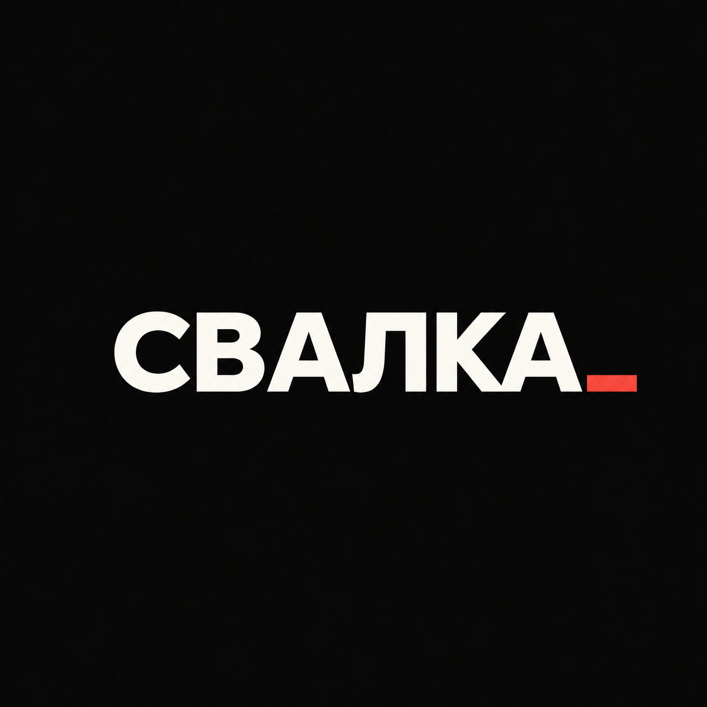
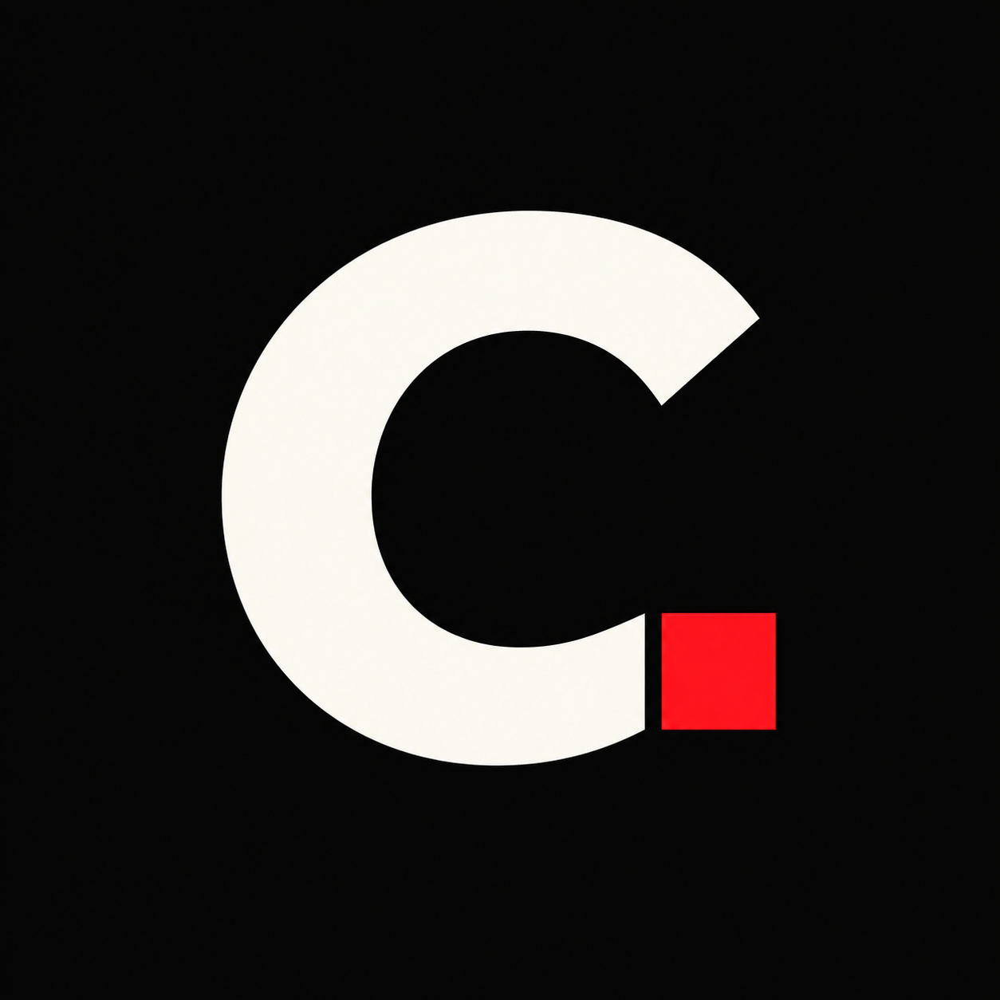
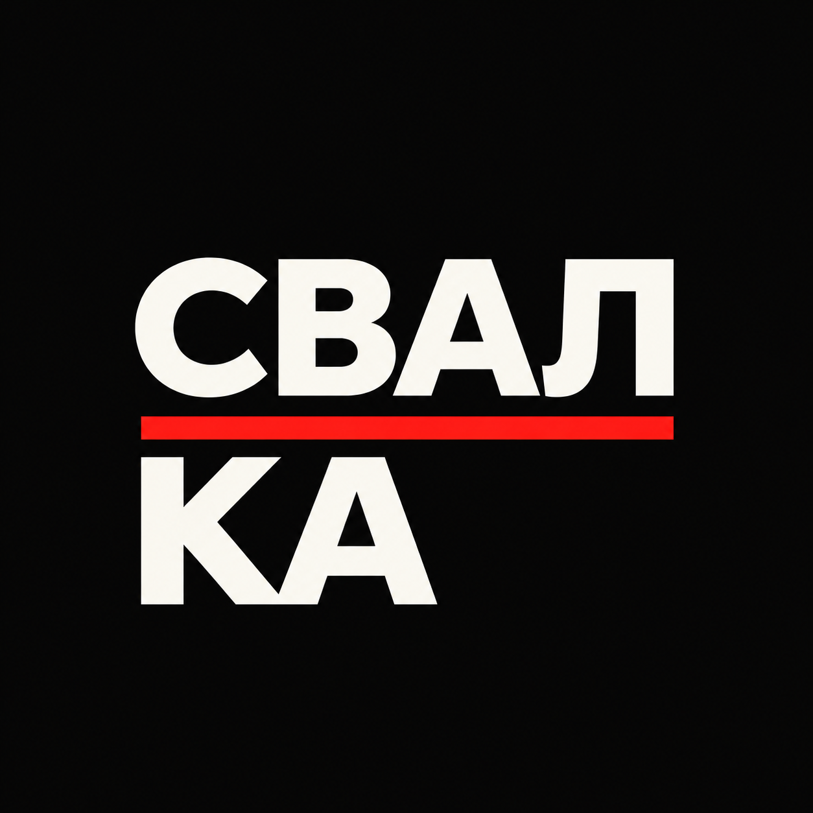
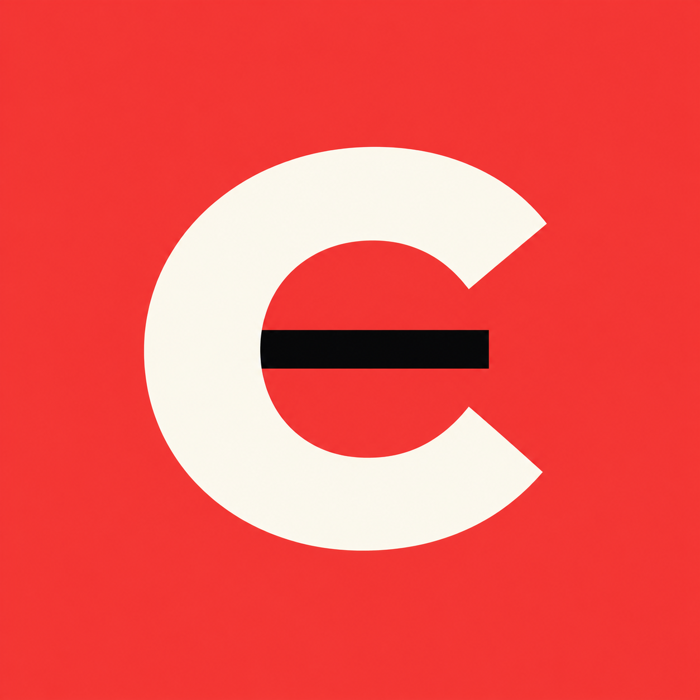
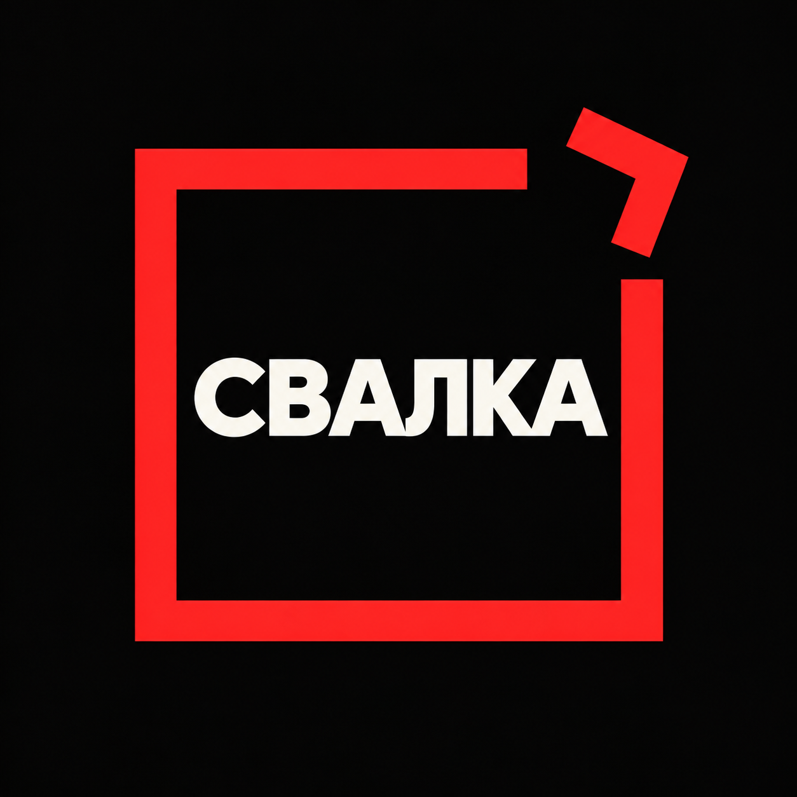
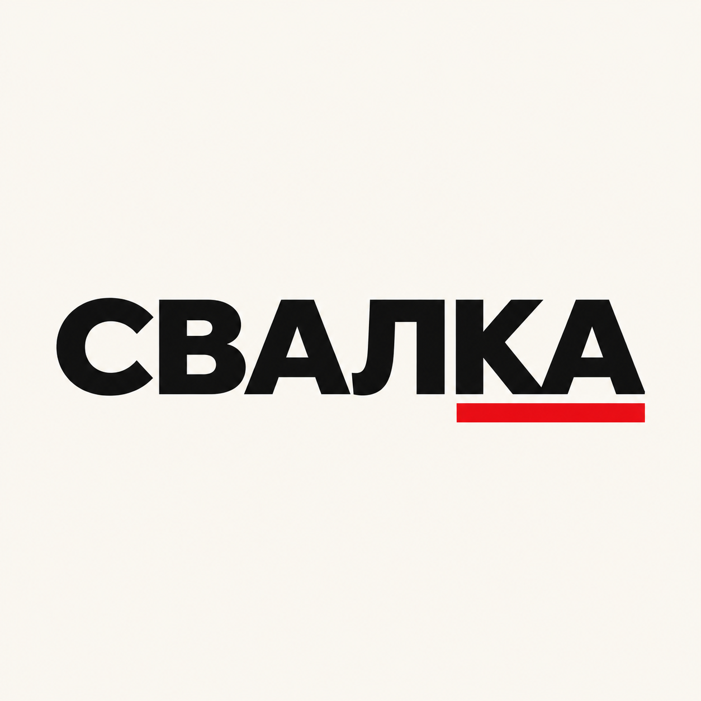
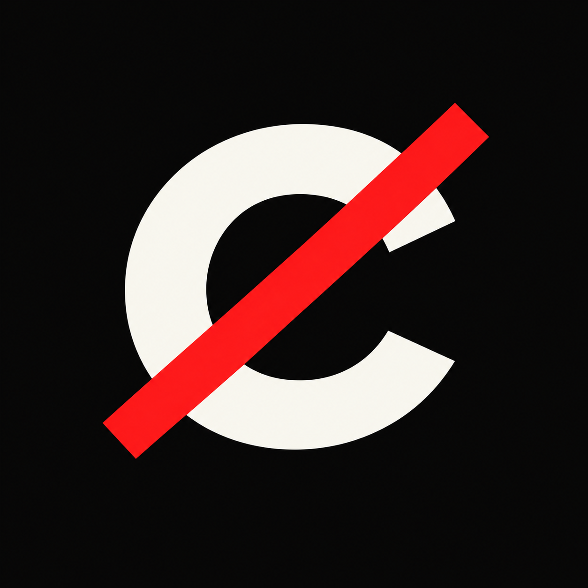
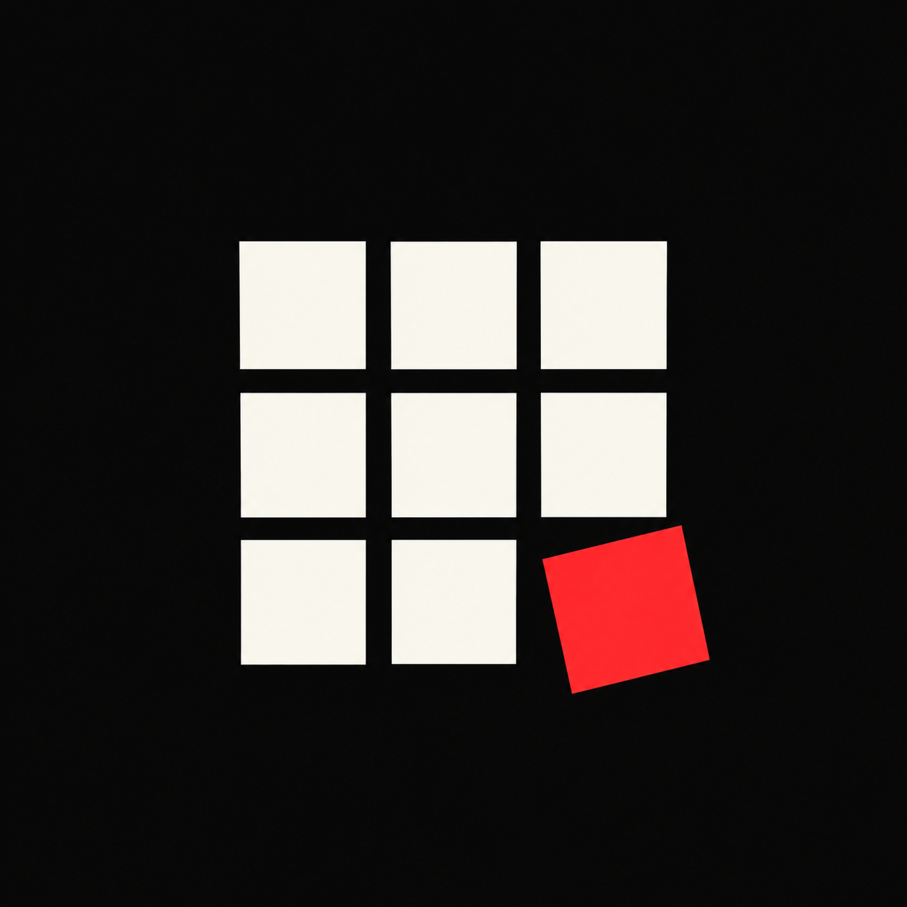

01 Твоя, обновлённая
Исходная надпись с красным курсором.
Открыть PNGБольшой вид и 48 px для проверки на рабочем столе

Исходная надпись с красным курсором.
Открыть PNGПрежний формат, но акцент на КА.
Открыть PNG
Однобуквенный знак для маленького размера.
Открыть PNG
Плакатная композиция в две строки.
Открыть PNG
Максимально заметная иконка.
Открыть PNGКороткое СВ с красной точкой.
Открыть PNG
Слово внутри открытого красного контура.
Открыть PNG
Твоя типографика для светлой темы.
Открыть PNG
Буква и действие приложения в одном знаке.
Открыть PNG
Абстрактный знак без букв.
Открыть PNG